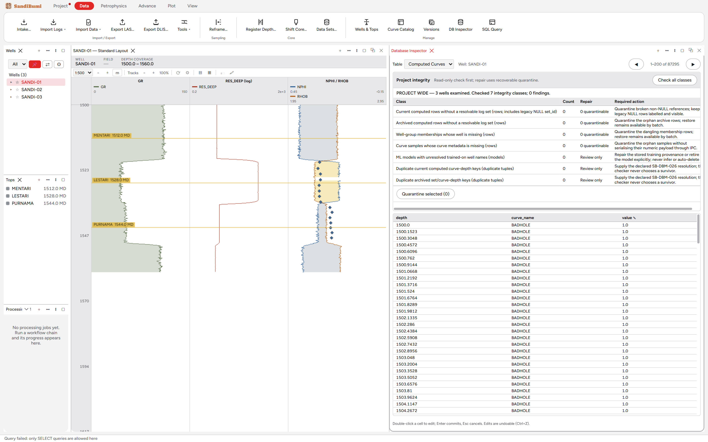

The Database Inspector is the raw view of the project file: seventeen
tables, from Wells and Standard Curves through Tops, Zone Parameters, Core
Data, Log Sets, the audit trail and the curve archive, browsable row by row
and editable cell by cell. Reach for it when a number on a plot needs
checking against what is actually stored, when one wrong cell needs a
surgical fix, or when the project's integrity should be proven rather than
assumed.
The pane

Computed Curves on the example well: 87,295 rows paged 200 at
a time, and above the grid the integrity verdict, "PROJECT WIDE" with 7
classes checked and 0 findings.
The table select scopes the grid; row-heavy tables page (1–200 of
87,295 here) and follow the selected well where the table is
per-well.
Edits are real edits: double-click a cell, Enter commits, Esc
cancels, and every edit is undoable (Ctrl+Z), the same undo stack the
rest of the app uses.
Project integrity runs a read-only check first, on principle,
and until it has run the pane claims nothing. In its own words:
Read-only check first; repair uses recoverable quarantine.
Not checked yet — no clean claim has been made.
Step by step
Open Data ▸ DB Inspector, pick the table, and page or switch
wells to the rows in question.
For a surgical fix, edit the cell in place and verify the change where
it is consumed (the log view or plot that raised the question).
Press Check all classes to run the integrity sweep. On the
example project it reports 3 wells examined, 7 integrity classes
checked, 0 findings; each class row states what a finding would mean
and whether repair would quarantine rows (recoverable) or is
review-only.
Reading the result
The class list is worth reading even at zero findings, because it is the
catalogue of what can structurally go wrong: computed rows without a
resolvable log set, archived rows orphaned from their set, well-group
members whose well is gone, curve samples missing their metadata, ML models
naming wells that no longer resolve, and duplicate depth keys in the
current and archived stores. Repair never deletes: broken references are
quarantined recoverably, and legacy rows are labelled and kept visible.
QC and pitfalls
This pane bypasses interpretation logic on purpose. An edit
here changes stored data directly, with no module re-run; use it for
data corrections, not for changing an answer.
Prefer the SQL panel for questions. Browsing 74 thousand rows
to count something is what the read-only query panel is for; the
inspector is for looking at and fixing specific rows.
Run the integrity check after anything unusual: a crash during
an import, a restored backup, a project file that travelled. A clean
claim exists only after the check has run.